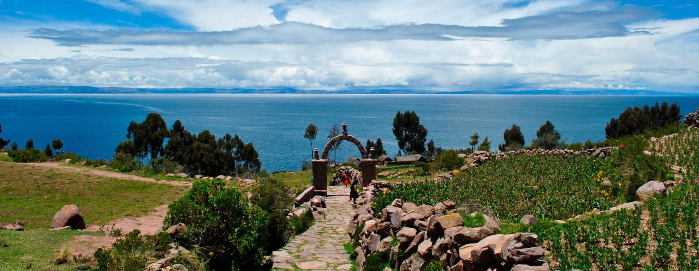
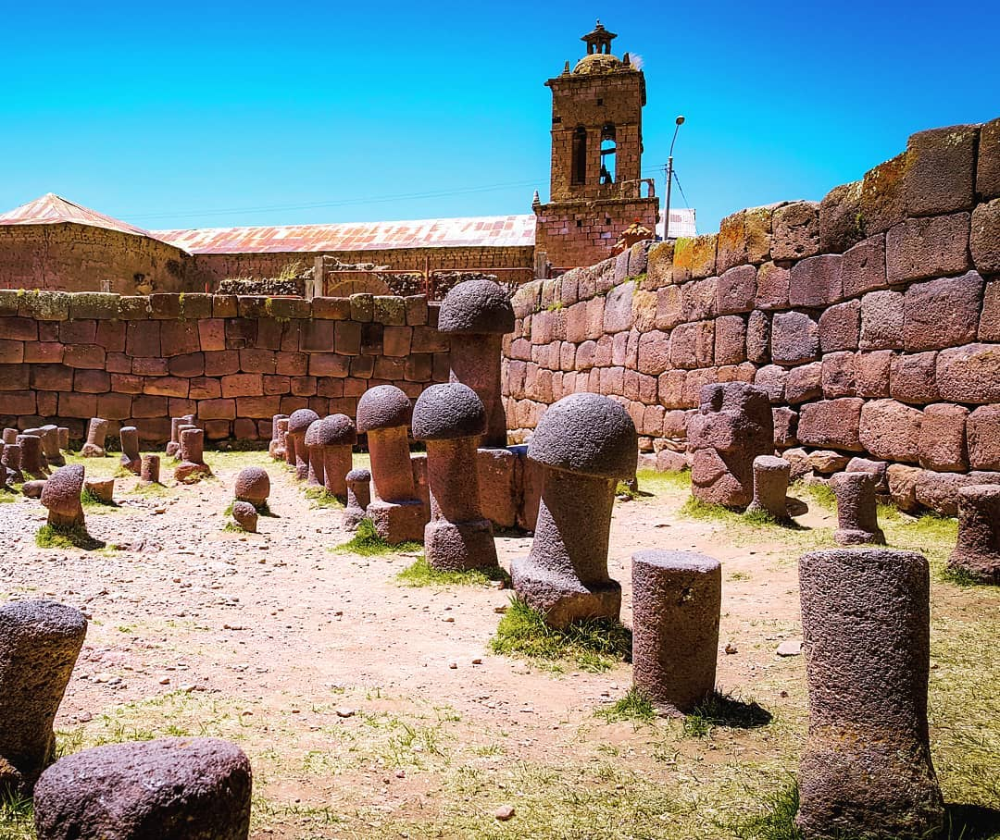
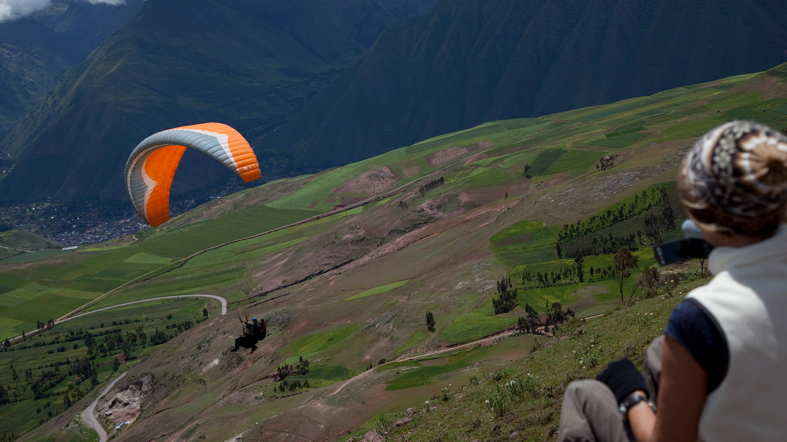
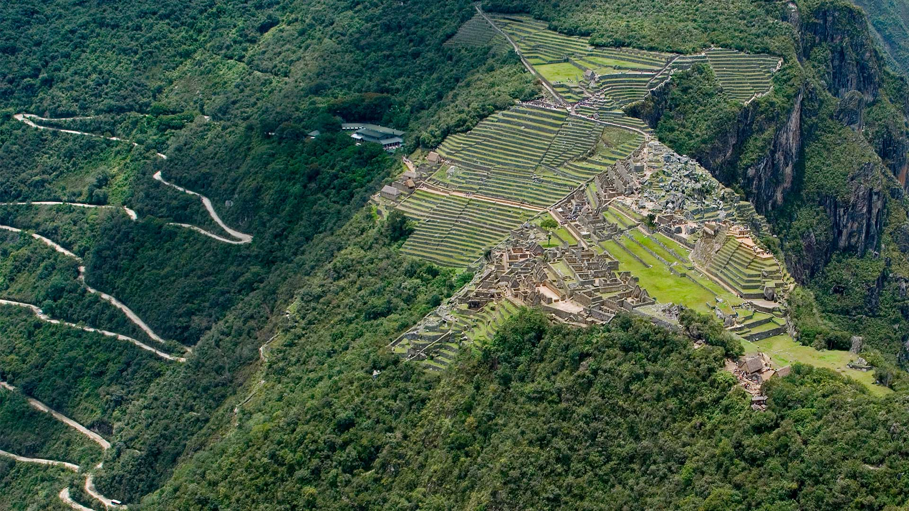
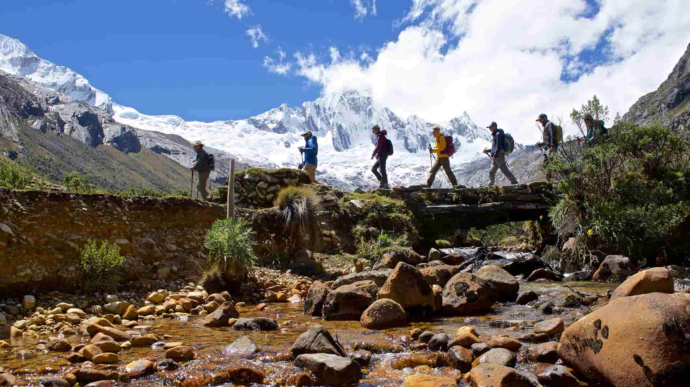

PUNO
Puno es una hermosa ciudad ubicada en el sureste de Perú, cerca de la frontera con Bolivia. Se encuentra a orillas del lago Titicaca, el lago navegable más alto del mundo. Puno es conocida por su rica cultura andina y sus impresionantes paisajes naturales. La ciudad de Puno es famosa por su festival principal, la Fiesta de la Candelaria, que se celebra en febrero. Durante esta festividad, las calles se llenan de coloridos trajes tradicionales, música, danzas y desfiles. Es una oportunidad para presenciar la riqueza cultural de la región y disfrutar de la vibrante energía de las celebraciones. El lago Titicaca es uno de los principales atractivos de Puno. Sus aguas azules y tranquilas se extienden hasta donde alcanza la vista y están rodeadas de hermosas islas, como las Islas Uros y Taquile. Estas islas son habitadas por comunidades indígenas que han preservado sus tradiciones ancestrales y ofrecen a los visitantes una experiencia única para aprender sobre su forma de vida, su artesanía y su conexión con la naturaleza. Además del lago, Puno también ofrece otros sitios de interés, como el Templo de la Fertilidad, conocido como Chucuito, que es un lugar histórico y culturalmente importante. El centro histórico de la ciudad también cuenta con encantadoras calles empedradas y edificios coloniales, como la Catedral de Puno. La gastronomía en Puno es otro aspecto destacado. Los platos típicos incluyen delicias como el caldo de cabeza de cordero, el chairo (una sopa andina), la trucha fresca y la pachamanca, un plato tradicional que se cocina bajo tierra.
Atractivos Turísticos
Islas Flotantes de los Uros

Islas utilizando técnicas ancestrales
Isla Taquile
Explora sus paisajes.
Chucuito y el Templo de la Fertilidad
Este templo presenta una.
Actividades
Explorar el Valle Sagrado
Tierra sagrada abierta para ti.
Observación desde el Huayna Picchu
Mirando con los ojos del cóndor.
Recorrido Rutas de trekking
Explora los caminos del Perú.